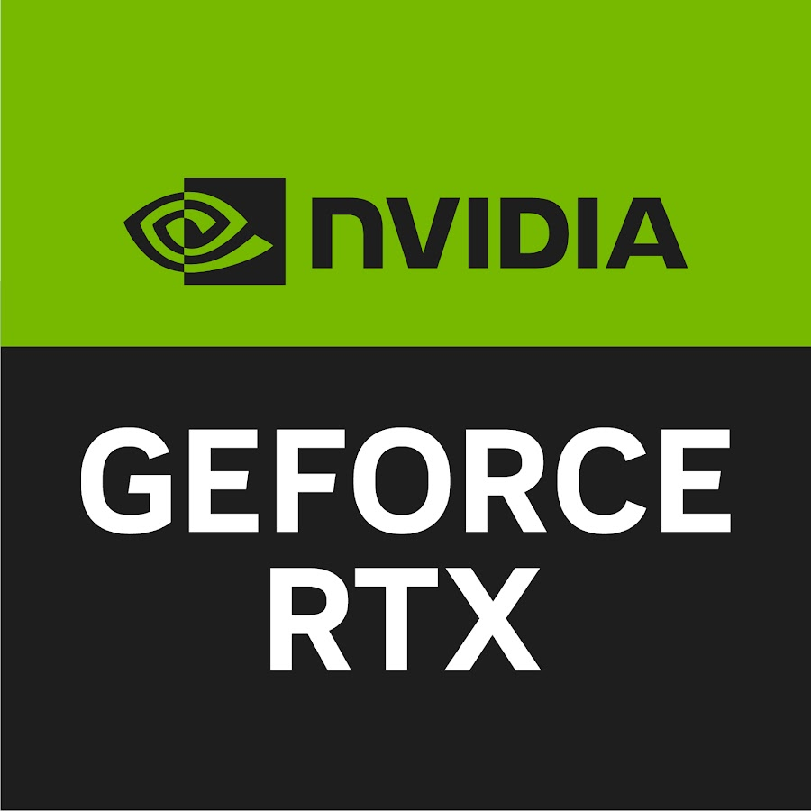

: AMD stands for "Advanced Micro Devices" and are labed with A, B, and X. "A is for entry, B is for mid-range, and X for enthusiast-level chips". These boards only work with AMD CPUs
: AMD stands for "Advanced Micro Devices" and are labed with A, B, and X. "A is for entry, B is for mid-range, and X for enthusiast-level chips". These boards only work with AMD CPUsPersonal computers have become a main stay in households nowadays with them serving many purposes(work, gaming, school, web browsing etc..) and with how many people are online its rare for pc's not to be in households. They can built or you can by them prebuilt from stores such as MicroCenter and Bestbuy. This website is dedicated to those looking to buy the parts and build their own pc's.
Website Key
The best place to buy parts for pc's is Microcenter, they are a very reputable store with everyone who has ever been their highly recommending it. The down side to Microcenter being they are very few and far between so if your state or country doesn't have one your other bets are places like BestBuy or other computer stores, never buy parts from online without thoroughly reviewing the seller. For parts you have Motherboards, CPUs, GPUs, PSUs, RAM and storage.
Motherboards are the backbone of all pc's they connect all of the systems hardware and allows them to communicate with eachother they come in many different types and sizes.
TYPES:Intel: Intel Motherboards are labled with LGA on them which stands for "Land Grid Array" these boards only work with Intel branded CPUs (ex:LGA 1700)
AMD: AMD stands for "Advanced Micro Devices" and are labed with A, B, and X. "A is for entry, B is for mid-range, and X for enthusiast-level chips". These boards only work with AMD CPUs
Sizes:
Micro ATX: Micro ATX is the smallest formfactor for a motherboard allowing for a more compact build if your room doesn't have that much room.
ATX:ATX stands for "Advanced Technology Extended" this is the standard size for pc's. Used primarily for mid-range budget pc's
EATX: EATX stands for "Extended Advanced Technology Extended" this is a larger version of the ATX boards some offer dual CPU configurations which is useful for those wanting a rig dedicated to video processing. These are used for a higher-range budget pc.
CPU stands for "Central Processing Unit" these small chips are the main part of your computer they interpret, processes and executes instructions, most often from the hardware and software programs running on the device. The power of these chips matter since they affect how fast your pc is, they are normally classified by the amount of MHz(MegaHertz) the higher the MHz the faster they process information. There are two brands of CPUs Intel and AMD(commonly reffered to as Ryzen)
Types:
Intel: Intel CPUs only work with Intel motherboards. They are seperated by their strength, generation and their suffix EX:Intel Core i9-14900k.
Strength which is labled as i and then a number.
Generation is the first two letters after the dash.
Suffix stands for their design ranging from k,f,s,t and xe. The ones that matter for us are k and f: K allows for the cpu to be overclock which allows for better performance at the risk of harming your pc if you over clock it to much, F means the CPU doesnt have dedicated graphics and must be paired with a GPU.
Intel CPUs are better at single-tasking than they are multi-tasking.
Ryzen: AMD CPUs only work with AMD motherboards. Just like intel they are sperated by strenth, generation and their suffix EX:AMD Ryzen 9 7900x. strength is labled with the number after ryzen(the 9)and the generation is the first number after the 9(the 7). The suffix does the same thing for ryzen as it does for intel with the most important one being X which stands for high performance. Ryzen CPUs are better for multi-tasking than single-tasking.
GPU stands for "Graphics Processing Unit" these perform mathematical calculations at high speeds, and are used for graphics-related work like graphics, effects, and videos they also are used to display video output to your monitor. The power of these determines how good things such as video games run and look, how smooth video editing is. There are many brands of graphics cards but they're are only four types of GPUs, brands aren't as important so just go for the card that fits your budget but the type matters cause you'll need to install the necessary software to be able to update your GPU(all GPUs types work with any motherboard aslong as the motherboard supports it).What matters is VRAM which stands for "video random access memory" which is very important for gaming since it's used to load the games graphics, with the standard for gaming being around 8 or 12 gigabytes.
Types:
Intel: Intel GPUs are rather niche since the majority of pc owners only know of Nvida and AMD. They are mostly owned by people who are very tech savvy, you can update them directly from Windows or go to their website to manually install them at their website. Intel.com
Integrated: Integrated GPUs are built into your CPU, these are normally weak with some exeptions. Perfect for low-budget builds. Windows will automatically update them
AMD and Nvidia: AMD GPUs and Nvidia GPUs are the mainstream gpus the ones almost every pc owner has, there isn't that big of a difference for either so go with which ever. You can install AMD updates via their tool at https://www.amd.com/en/support/download/drivers.html, and you can install Nvidias tool here https://www.nvidia.com/en-us/geforce/geforce-experience/.
PSU stands for "power supply units" these as the name stands for powers your computer these are rated by the wattage they have and their certification. Wattage is important since your pc needs power to run and if you buy a PSU with less wattage than what is required your pc won't boot. The certification tells you how efficient your PSU is at controlling your wattage with the certificates being "Bronze, Silver, Gold and Platinum".
When it comes to picking a PSU consult a professional or find a website that will tell you the recommended amount of wattage you should have for your pc.
RAM stands for "Random-access Memory". RAM acts as a short-term memory for your pc, storing data, the better the RAM the more memory it can store and it increases how fast your RAM sends date to your CPU. A pc has four RAM slots on its motherboard but it only needs 1 stick of RAM to function, but it is highly recommended to get 2 sticks of RAM, for size get two sticks of 8gb or two sticks of 16gb.
RAM is seperated by it's DDR which stands for "double data rate" there are two DDR's that are relevant you have DDR4 and DDR5. DDR4 being slower but cheaper than 5 while DDR5 is faster its more expensive. Make sure you check which type of RAM your motherboard supports before picking one.
Your storage is very important since this is where everything is stored on your pc such as files, apps, and most importantly your operating system. There are three types of storage you got HDDs, SSDs, and NvMEs.
Types:
HDDs:HDD stands for hard disk drive these drives function by using magnetic disks or platters to write and read data, it functions almost like a vinyl player with an arm that reads or writes data while the disk spins. HDDs are old and slow but most importantly are the most prone to breaking due to the amount of moving pieces it has, so only use these as something to store pictures or files you don't really care about.
SSDs:SSD stands for solid state drive these drive store data on flash memory making retrieving information way faster than HDDs and since it has less moving parts is also less prone to breaking.
NvMEs:NvME stands for Non-volatile Memeroy Express it stores data the same way as ssds but has built in protocols that make transfering data faster than SSDs. NvMEs unlike SSD/HHDs is installed directly onto your motherboard while SSDs and HDDs are installed in the case and connected to your pc using SATA cables which also allows it to transfer data way faster than both.
Your choice of storage comes down to the price HDDs are the cheapest but are slower and hold a bigger risk of failure, SSDs are mid-range that perform better than HDDs, while NvMEs are the best form of storage they are expensive.
Operating systems is a program that manages a computer's hardware and software resources, and provides services for computer programs. These are needed for a pc to be able to be able to do anything, there are two main operating systems that are used Windows which is provided by Microsoft and Linux which is a open source operating system.
Your choice in operating system is purely opinionated. Windows costs money but is easier to work with and easier to install as to were linux is free but harder to install and use. It comes down to your choice each has their downsides so thoroughly research both sides before deciding
Cases house all of your hardware and also allow you to attach fans to help cooldown your pc. When it comes to cases make sure you get one that can fit all of your hardware while still having some spare room incase you want to upgrade down the line. Cases are purely subjective so just go for one that fits your needs.
Your pc will generate alot of heat so its necessary to have good cooling there are two ways to cool your pc:Air and Water cooling. Air cooling uses fans such as your CPU fan or case fans to help circulate air into the systme to make sure components stay cool, while water cooling requires a reservoir of liquid to help cool your pc. Even though water cooling is more effective its harder to install, has a higer risk of damaging your hardware if it leaks and the reservoir has to be changed every year or so, while air cooling once you can the fans installed you don't have to mess with it.
Building your first PC can be nerve-racking and can cause alot of stress so its usefull for people to do research on this before committing to something. Also be sure to look up videos on how to install everyting such as your hardware and software, id recommend watching this video https://www.youtube.com/watch?v=PXaLc9AYIcg&ab_channel=TechSource a tutorial made by youtuber TechSource since it delves into building the pc and installing windows, For linux users id recommend watching this https://www.youtube.com/watch?v=_BoqSxHTTNs&ab_channel=MichaelHorn a video made by Micheal Horn since it shows how to install linux.